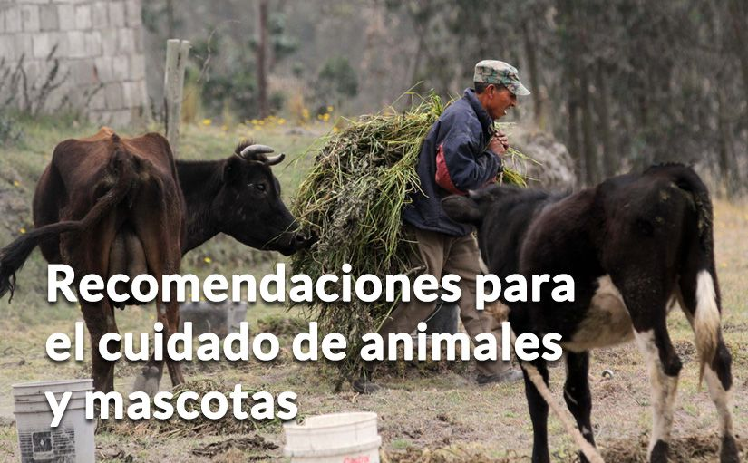

Ante caída de ceniza, proteja sus mascotas: evite que coman pasto o beban agua con ceniza porque podría perjudicar su salud.
Ante caída de ceniza, proteja sus mascotas: evite que coman pasto o beban agua con ceniza porque podría perjudicar su salud.|  |
Ante caída de ceniza, proteja sus mascotas: evite que coman pasto o beban agua con ceniza porque podría perjudicar su salud.
Las mascotas y animales de granja deben estar bajo techo.
Proteja a sus mascotas: mantenga alimentos, agua y medicamentos de reserva para ellos.
Ante caída de ceniza, permita que su mascota viva y duerma dentro de la casa.
Ante caída de ceniza, retire los platos de agua y comida de sus mascotas que están a la intemperie, es decir fuera de la casa.
Limpie los ojos, las vías aéreas respiratorias y patas de su mascota si están expuestas a la ceniza y antes de entrar a la casa.
Dele a su mascota abundante agua limpia y fresca. Debe guardarla en contenedores tapados.
Ante caída de ceniza, si su mascota estornuda seguido, tiene mocos, tos u ojos rojos llévela a un veterinario.